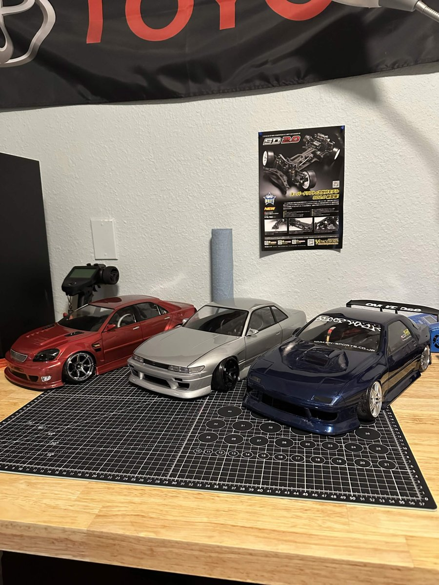

Welcome
My name is Ali Elgamiel and I'm really into the hobby of RC drifting. This site is basically my way to explain what the hobby is, how I got into it, what cars I'm running, and the bodies I've been building.
What is RC drifting?

RC drifting is pretty much exactly what it sounds like. You take a 1/10 scale remote control car and instead of racing it for the fastest lap, you slide it sideways around the track on purpose. Most of the cars are RWD just like real drift cars, and they run hard plastic tires so they can actually break traction.
There's also a small part called a gyro that helps the car hold its angle so you're not spinning out every corner. When the car is set up right it looks just like a real drift car going through a corner, just way smaller.
Why I like it
I come from a background of being obsessed with the Japanese low drift style from the late 90s to early 2000s. Low Silvias, Chasers, and other sedans sitting on deep wheels. I've always seen drifting as a moving car show. It's a really cool and interesting way to show off the style of these low Japanese cars while they're actually doing something, not just sitting parked.
RC lets me do all of that at a scale I can actually afford. I can build the exact cars I would love to own in real life, tune them to drive exactly how I want, and take them to the track with my friends on the weekend. All fun times, zero stress.
Some terms you'll see on this site
Chassis
The actual car underneath the body. It has the motor, suspension, electronics, and wheels. The body just sits on top of it.
Servo
The little motor that controls the steering. A faster and stronger servo makes the steering way more accurate.
Gyro
A sensor that helps correct the steering while the car is sliding. It's what keeps an RWD drift car from spinning out all the time.
RTR
Ready to Run. The car comes already built with electronics so you can drive it right out of the box.
Body or Shell
The clear polycarbonate cover that makes the car look like a real car. You cut it out and paint it yourself.
If you want the full story on how I got into this, start on the My Story page. If you just want to see the cars, check out My Garage and Bodies.